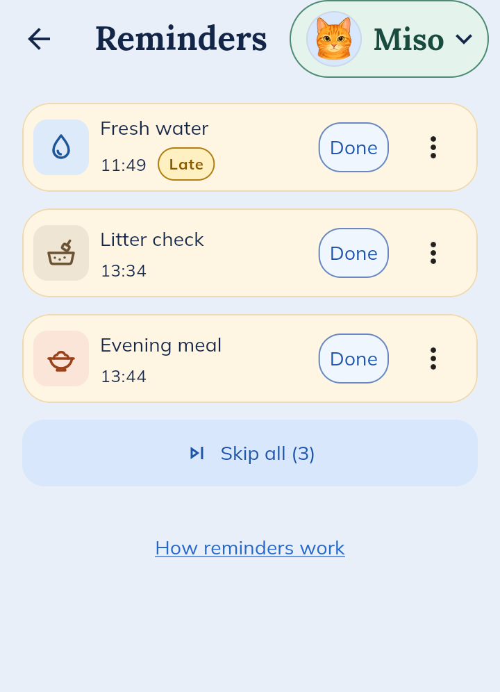
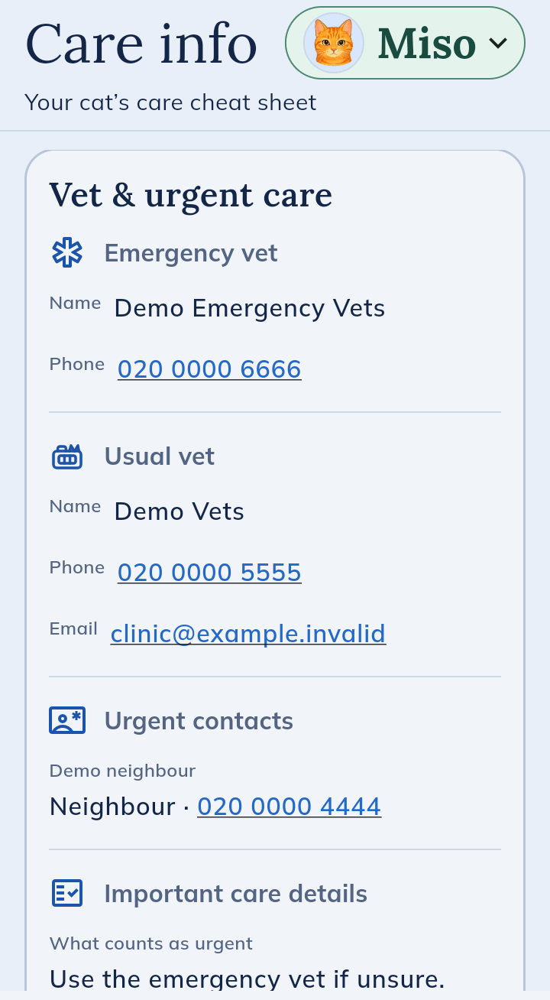

What it actually does
Here’s the app as it is at the moment, shown with Miso, a made-up cat, and Sam, a made-up partner. It’s free and on Android, and I’m working on the iPhone version.
Morning
Sam feeds Miso before work and logs it. Later on you open Today, see breakfast was 40 g and that Miso finished it all, so Miso doesn’t get fed twice.
Around lunchtime
The water’s gone late. Reminders lists what’s due today and whoever gets to it taps Done. Phone alerts work too if your phone settings allow them, but keep your usual reminders for anything like medicine.

When something looks off
Care info is a cheat sheet for the cat. It has the emergency vet’s and usual vet’s numbers, and you just tap one to ring. This is the bit I wished I’d had when Tokyo had an accident.

Friday, going away
A friend is feeding Miso for the weekend. You give them access for three days, a week or a month. They can log what they do and see the routine but can’t change your settings, and when the time’s up their access ends by itself.
Back home
History shows who did what on any day. If someone forgot to log something you can add it after, and you can save a CSV of a date range if the vet asks.
More than one cat
Got two? Tap the name at the top to switch. You can have up to three cats in a household for now.
The honest bit
It’s a test version. It keeps a record of care and that’s it. It won’t give vet advice or tell you if something is wrong. A household can have up to three cats, you plus two other people, and one sitter at a time. Each person needs their own Android phone. It’s made for a cat that more than one person looks after, like a couple at home or an owner and their regular sitter.
On an iPhone? It isn’t ready yet. Email me and I’ll let you know when it is.
Want to try it?
Send a short request and I’ll invite you when the test is ready. Partners and sitters send their own.
Screenshots are from the app, filled with made-up records. Some details may change before it’s public.